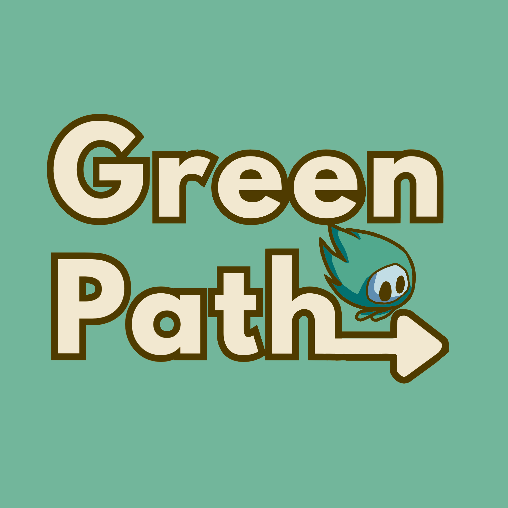
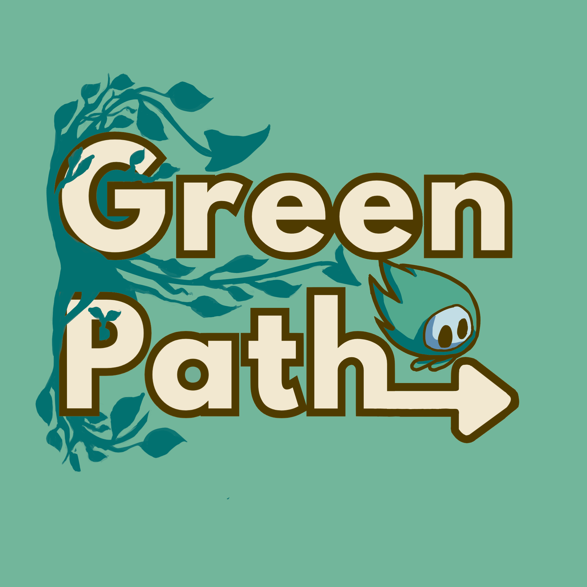
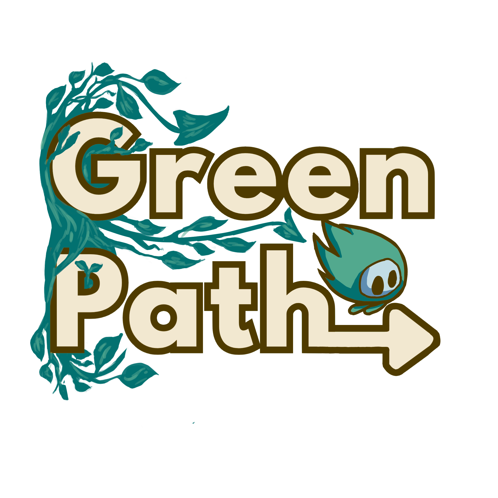
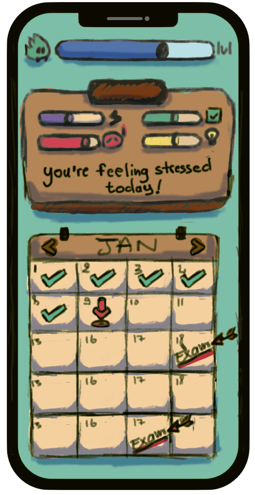
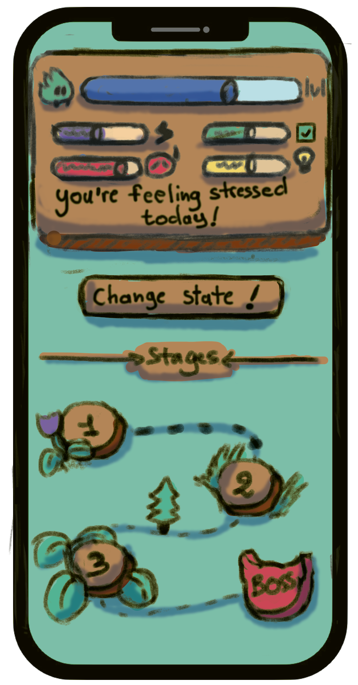
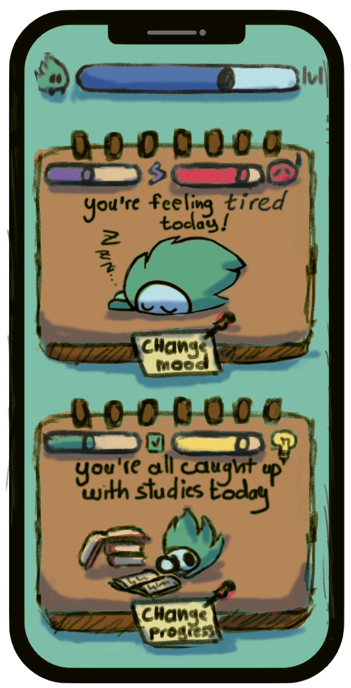

GreenPath
Donnez votre avis sur nos interfaces !

Page 1 / 3 : Logo et Page d'accueil
1
Choix du Logo
Voici 3 variantes du logo GreenPath. Observez bien chaque version avant de choisir votre préférée !

Logo V1 — Épuré

Logo V2 — Détaillé

Logo V3 — Illustré
2
Page d'Accueil
Voici 3 propositions pour la page d'accueil de GreenPath : la première chose que vous verrez en ouvrant l'app !

V1 — Calendrier principal

V2 — Étapes du monde actuel et
progression

V3 — Stats,Mood et humeur du jour